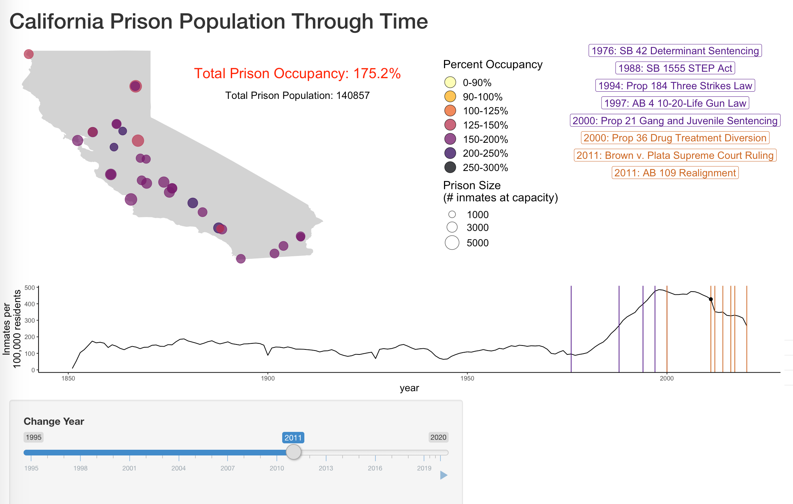

Diversity, Equity, & Inclusion
I am committed to expanding access of STEM fields to people from historically minoritized backgrounds, primarily through recruitment initiatives and by creating an inclusive and equitable STEM community. The exclusion of women and people of color from science not only minimizes access to a career that should be open to all, but also is a detriment to our progress through a loss of diversity of perspective and potential for innovation.
Division of Phylogenetics and Comparative Biology
Society for Integrative and Comparative Biology
2023 - present
In January 2023 I started my term as the Division of Phylogenetics and Comparative Biology (DPCB) SPDAC Rep! My job in this role is to advocate for early career researchers at the society level and to build programming targeting ECRs that give students the skills and support they need to succeed. If you are an ECR, my job is to support you! Please feel free to reach out to me with anything that DPCB and SICB can do for you!
 Evolution & Ecology Graduate School Preview Program
Evolution & Ecology Graduate School Preview Program
Founding Executive Board, Logistics Coordinator | 2020
Inclusion & Retention Presenter | 2020 - 2022
UC Davis
Graduate programs and most departments in Evolution, Ecology, & Behavior (EEB) fields are predominantly white. We at the Population Biology Graduate Group Diversity Committee felt that we can do better, especially in a state with as diverse a population as California. Though there are many graduate recruitment initiatives for biological sciences at the UCs, most are geared towards students interested in biomedical graduate programs. Evolution & Ecology Graduate School Preview is a five-week virtual program for senior undergraduate and Masters students from all over the country that covered topics related to entering graduate programs in EEB. We aimed to demystify the graduate school application process, with a focus on finding the right fit for each student. The program covered information on the basics of graduate school, funding, how to apply, faculty flash talks, and a panel of speakers with EEB backgrounds discussing their experience working both in and out of academia, as well as a mentoring program. All our materials, including slides and session recordings, are freely available on our website (linked here).
The "hostile obstacle course" of academia means that student retention is crucial to creating a diverse community. A key goal of Preview Day was to empower students to find graduate programs where they would thrive as people, not just as students. With Alexus Roberts Hugghis, I ran a session dedicated to "Finding a Good Fit," encouraging students to carefully evaluate programs they were interested in for fit across research, personal, and financial axes.
Our very first Preview Day was held August-September 2020, with 40 students, and the program has reprised in 2021 and 2022!
Praise for the program from students:
"[E&E Graduate Preview] exceeded my expectations. I was pleasantly surprised with the amount of personal experience presented concerning grad school work/social life. I liked how heavily that was mentioned when considering a program and a PI."
"[E&E Graduate Preview] shed some light on important things to know before applying to the program. Very welcoming and safe environment for inquiry."
"...the overall style of the presentations and the obvious support and effort that each of the facilitators put into these seminars made me feel like I can do well as a graduate student as well."
Effects of Proposition 22 on California Prison Populations
Data Science Challenge Team Member, Challenge Winner | 2020
UC Davis
California's direct democracy proposition system means that state residents vote on a dozen overly detailed, confusing propositions each election cycle. With my teammates, Erin Calfee and Darien Satterfield, I won the UC Davis DataLab's California Election Data Science Challenge. We created an interactive map showing the interaction of legislation and of California state prison populations over the last 25 years to demonstrate the potential for Proposition 20, which increased sentencing and prison terms, to increase the burden on California's already overcrowded prisons. We used all publically available data and created reproducible, reusible scripts to create an interactive RShiny web app.. You can find all our scripts in our github repository and interact with the web app!
Population Biology Diversity Committee
Founding Member | 2016 - 2022
UC Davis
I was a founding member of the Population Biology Graduate Group Diversity Committee in Fall 2016. Since then, we worked with the Population Biology Graduate Group and the Center for Population Biology to increase the inclusion of our graduate group. We have made changes to the language on the Population Biology website, developed and distributed resources for incoming first-year students, and worked with the Population Biology Admissions Committee to remove the GRE from admissions in our graduate program and implement a rubric-based evaluation system for admissions. I was a key member of our group in increasing transparency and communication of community feedback in fellowship applications, as well as advocating for increased graduate student stipends, a key issue in retention of students from historically minoritized backgrounds.
 Outreach at UC Davis
Outreach at UC Davis
Fish Biodiversity Outreach | 2016 - 2022
UC Davis
I was a leader in multiple outreach events at UC Davis. I was the station coordinator for the fish station at a two-time Best Life Sciences exhibit for the Tree of Life at UC Davis' Picnic Day, where 100,000 visitors visit the Davis campus. Each year, I also worked at the hands-on fish collections exhibit at UC Davis Biodiversity Museum Day.